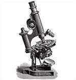

라이카 제품 탄생의 역사
Leica Revolution
최초의 소형 포켓 카메라와 함께 오스카 바르낙은 고향에서 일궈낸 그의 대 발명에 대한 인상적인 전문서를 발표한다. 1925년 라이카의 판매가 시작되자마자, 사진가들은 이 새롭고, 뛰어난 휴대성의 카메라를 사용하여 빠르고 간편한 방식으로 예술적인 걸작을 탄생시키고, 취재활동을 시작한다.
2005디지털 겸 아날로그 R8/R9 디지털 SLR 카메라로 변형.
2004가볍고 향상된 구성의 Geovid 8ｘ42 BRF로 재 디자인.
2002디지털 디스플레이 형식의 타이머가 장착된 Leica M7 출시.
1999C1과 함께 라이카의 새로운 컴팩트 시리즈 출시
1998플래시 노출장치가 장착된 첫 번째 콤팩트 카메라 Digilux 출시
1996마이크로프로세서에 의해 제어되는 카메라 Leica R8 출시
1994비구면 렌즈 발표. 라이카 최초의 망원경 Leica Televid 발표.
1992라이카 최초의 통합 레이저 R.F 쌍안경 Geovid 7ｘ42BD 출시
1990새로운 매커니즘의 쌍안경 시리즈 Leica Trinovid BA 출시
1989라이카 최초의 콤팩트 카메라 LEICA-AF-C1 출시
1984라이트 장치와 파인더 속 LED가 장착된 Leica M6 출시
1980라이카 최초로 멀티 프로그램 자동이 가능한 Leica R4 출시
1976선택적 라이트 장치가 부착된 전자식 카메라 Leica R3 출시
1965라이카 최초의 SLR 카메라, Leicaflex의 연속생산 시작.
1957라이카의 마지막 나사산 모델인 Leica Illg 소개.
1925the name of FILAR. 접이식 렌즈 독일 무역박람회에 발표.
1914Oskar Barnack의 Ur-Leica 발명.
1907Max Berek 의 관리, 감독 아래 쌍안경 생산 시작.
188710,000개의 현미경 생산.
1849Carl Kellner는 렌즈와 현미경 개발을 위한 광학회사 설립